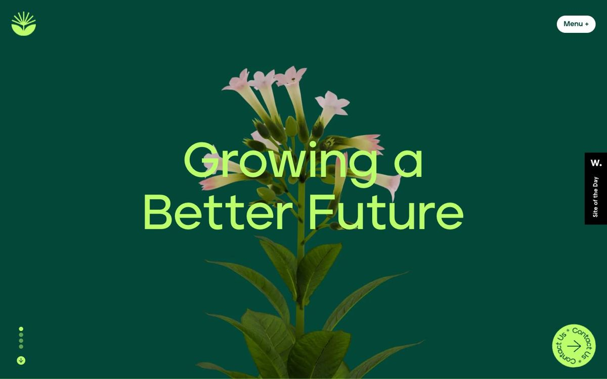

Bright Biotech
brightbiotech.co.uk · Awwwards, сайт дня
- Чем стильно
- Растение растёт на скролле, камера приближается к листу. Два цвета на весь сайт, огромный шрифт.
- Что берём
- Каждая категория начинается с макро её растения или формы выпуска. Один фирменный цвет на весь экран, заголовок крупно.
- Нарушает ТЗ
- Тёмные цветные экраны вместо светлого фона, заметная анимация.